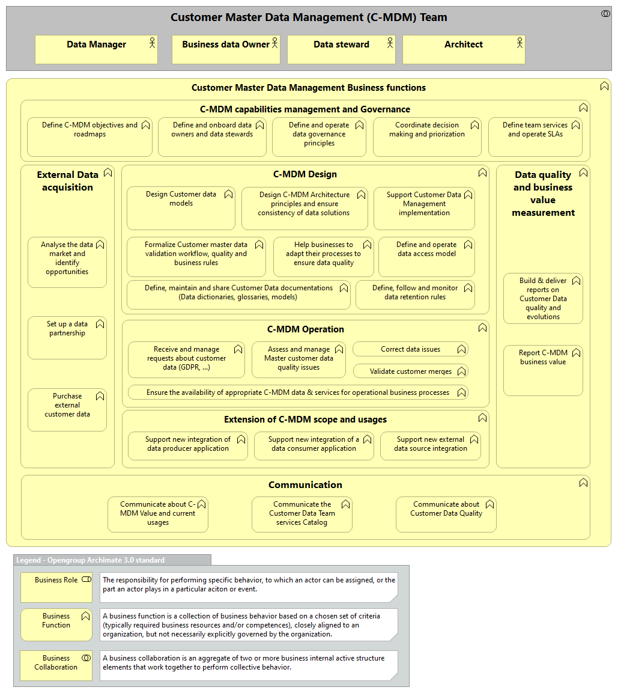
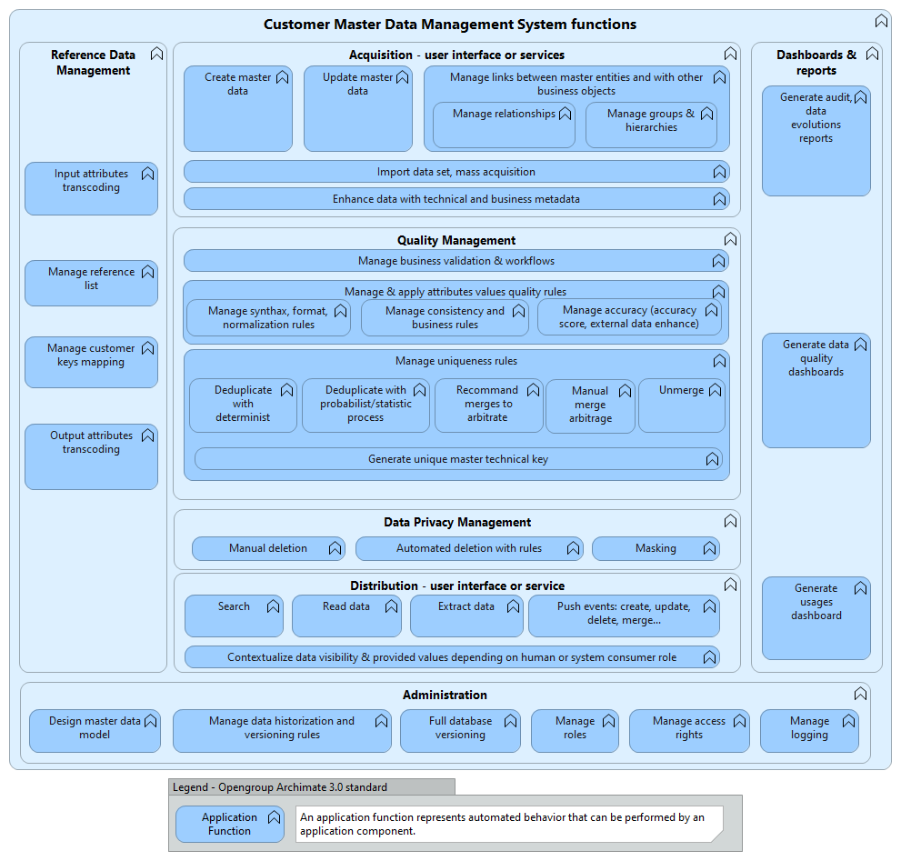

reduce risks associated with data redundancy, ensure higher quality, and reduce the costs of data integration.


This section will provide some recommendations on WITH WHAT tool meaning provide a framework for tool selection that can be adapt to each entity context.
| Application Function | Requirement | Example |
| Multi-Domain Master Data Management | The solution should support management of master data across multiple domains |
|
| Business Process Management | Workflow and business process management capability to automate data governance processes |
|
| Versioning and Audit Trails | Support for version control of master data records and comprehensive audit trails to track changes, ensuring data transparency and compliance |
|
| Hierarchical Data Management | Ability to manage hierarchical relationships within master data, such as organizational structures, product hierarchies, or multi-level customer relationships |
|
| Data Lifecycle Management | Support for managing the entire lifecycle of master data, including data creation, modification, validation, and retirement, with automated lifecycle workflows and policies | |
| Data Retention and Archiving | Ability to define data retention policies and manage historical versions of master data, including archiving capabilities for compliance and historical analysis | |
| Business Rules Management | Capabilities for defining and managing complex business rules and validation logic to enforce data consistency and integrity |
|
| Matching and Survivorship | Advanced matching capabilities to identify duplicate records and survivorship rules to determine the most reliable and complete data for merged records |
|
| Data Integration | Support for real-time, batch, and near-real-time data integration with various data sources |
|
| User Interface and User Experience | Intuitive and user-friendly interfaces for data management, data visualization, and administrative tasks |
|
| API and Integration | Should offer comprehensive APIs and integration capabilities to facilitate seamless integration with other enterprise systems and custom applications |
|
This section will provide some examples of non-functional requirements to consider also for the selection of the tool.
| Application behavior | Requirement |
| Multitenancy | Adapt roles and permissions and behaviors for a complex organization, e.g. to delegate administration rights for a specific scope of metadata. Support metadata portability and reversibility. |
| Usability | Optimal user experience for the intended population, for exemple integration of metadata services within user tools (widgets, plugins, etc.). |
| Availability | The solution must provide mechanisms to isolate operational (transactional) activities from analytical (data intensive) computations. | Auditability | Track modifications (creation, access, update, deletion) to provide third-party assurance about content integrity. | Interoperability | Ability to interoperate with other systems (REST APIs, Event APIs, …). |